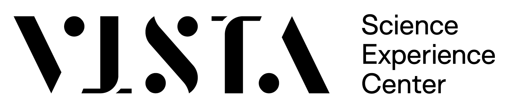
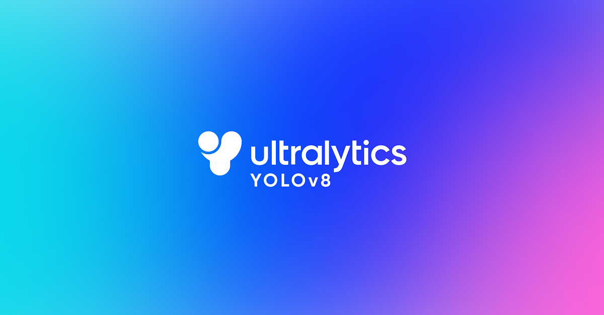
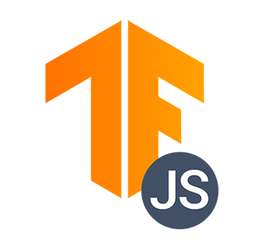

YOLOv8 WebCam Pose Detection Example
Serving :
yolov8n-pose.onnx
Model size :
640x640



Built by the
Distributed Algorithms and Systems
and
Machine Learning and Computer Vision
groups at ISTA, using open-source software:
YOLO-V8 pose estimation model
;
TensorFlow.js
; template code from
https://github.com/akbartus
.